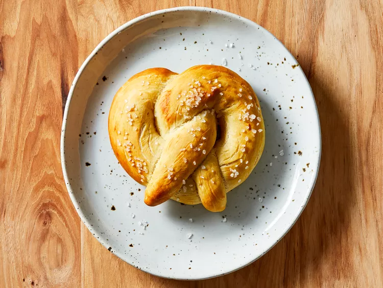

Papa Drexler's Bavarian Pretzels

Try this German pretzel recipe for traditional Bavarian pretzels. They're
fun to make and go great with a mug of beer!
Ingredients
- 1/2 cups all-purpose flour, divided, or more as needed
- 1 tablespoon active dry yeast
- 1 teaspoon white sugar
- 1 ⅓ cups water
- 2 tablespoons butter, softened
- ¼ teaspoon salt
- 3 tablespoons baking soda
- 2 tablespoons butter, melted
- 1 tablespoon coarse sea salt, or to taste
Steps
- Step 1: Gather all ingredients.
-
Step 2: Whisk 1 cup flour, yeast, and sugar together in a bowl. Stir in
water and softened butter until well combined. Let stand until bubbles
begin to form, about 15 minutes.
-
Step 3: Stir salt into yeast mixture, then gradually stir in 2 1/2 cups
flour until dough can be picked up in a ball.
-
Step 4: Knead until smooth and elastic, about 8 minutes, adding more
flour if needed.
-
Step 5: Divide dough into 6 pieces and let rest for a few minutes.
-
Step 6: Roll one piece into a 15-inch rope, then loop and twist rope
into a pretzel shape. Place onto a baking sheet and form remaining
pretzels. Cover and let rise for 15 minutes.
-
Step 7: Preheat the oven to 450 degrees F (220 degrees C). Grease a
baking sheet.
-
Stpe 8: Bring 3 cups water to a boil in a pot. Stir in baking soda and
remove from the heat.
-
Step 9: Dip pretzels into the water bath for about 45 seconds, flipping
over about halfway through.
-
Step 10: Transfer soaked pretzels to the prepared baking sheet; brush
with melted butter and sprinkle with salt.
-
Step 11: Bake in the preheated oven until golden brown, 8 to 10 minutes.